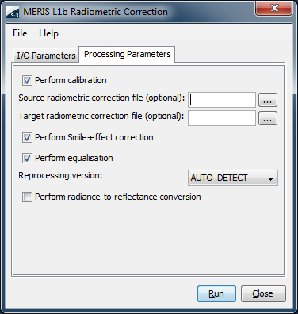

| MERIS Level 1 Radiometric Processor - Processor Description |
|

Name: Used to select the spectral source product. The source product shall contain spectral bands providing a source spectrum at each pixel. Use the ... button to open a data product currently not opened in VISAT.
Name: Used to specify the name of the target product.
Save to: Used to specify whether the target product should be saved to the file system. The combo box presents a list of file formats. If ENVISAT is selected the source product must be in ENVISAT format too.
Open in VISAT: Used to specify whether the target product should be opened in VISAT. When the the target product is not saved, it is opened in VISAT automatically.

Perform calibration:
Performs a recalibration of the MERIS data. The coefficients given by the 'Source radiometric
correction file' are applied to withdraw the calibration. Afterwards the coefficients of the 'Target radiometric
correction file' are applied.
Source radiometric correction file:
A MERIS Auxiliary Data File specifying the coefficients to revert the calibration. Files of the 2nd reprocessing
can be found at the ESA site MERIS
Auxiliary Data Files.
As default the "MER_RAC_AXVIEC20050708_135553_20021224_121445_20041213_220000" file is used.
Target radiometric correction file:
A MERIS Auxiliary Data File specifying the coefficients to be applied to the target product. Files of the 3nd
reprocessing
can be found at the ESA site MERIS Auxiliary Data
Files.
As default the "MER_RAC_AXVACR20091016_154511_20021224_121445_20041213_220000" file is used.
Perform Smile-effect correction:
Enables or disables the correction of the Smile-effect.
Perform equalisation:
Enables or disables the removal of detector-to-detector systematic radiometric differences.
Reprocessing version:
Specifies from which reprocessing the source product comes from. Possible values are AUTO_DETECT,
REPROCESSING_2 and REPROCESSING_3.
Perform radiance-to-reflectance conversion:
Perform a conversion from radiance to reflectance values. This can not be selected if ENVISAT is chosen as
output format and will be disabled.